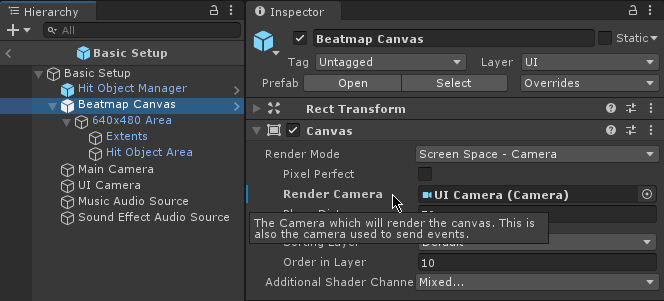
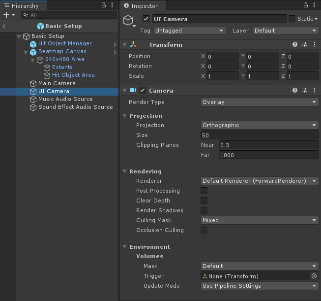

View Camera For Ball
It's part of the rules to check how far the mouse cursor is from the Slider Ball.
The rules assume a screen size of 640x480, but since the 4:3 area that the game is played on is automatically enlarged and centered on-screen (as explained in Beatmap Canvas), the pixel distance between the mouse cursor and the Slider Ball needs to be translated into that 640x480 area.
To do this, Hit Object Manager needs the Camera of the Unity UI Canvas that is used to display the Hit Objects.

There isn't anything special about this Camera. It's the typical set up for a Camera that's used to render Unity UI, where it is stacked onto the Main Camera.

Warning
If you are using a different render pipeline you will have to set up the cameras differently. If you are using HDRP for example, then refer to the notes on HDRP Multiple camera setup.
About the only thing to note here is that the UI Camera's Culling Mask is set only to UI (as is typical for a UI Camera).